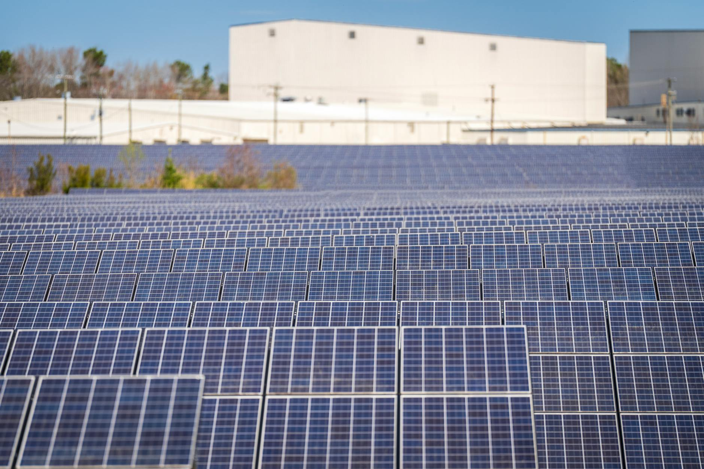

Silver's global market ran a 211 million ounce deficit in 2023. That means industrial users, investors, and jewelers together consumed 211 million more ounces than miners and recyclers produced. According to the Silver Institute's 2024 World Silver Survey, it was the third consecutive year demand exceeded supply. The deficits in 2021 and 2022 were smaller, but the trend has been consistent.
This post breaks down where the demand is coming from, why mine supply hasn't caught up, what above-ground inventories look like, and what a multi-year structural deficit means for someone holding physical silver.
What the 2023 Numbers Show
In 2023, according to the Silver Institute's 2024 World Silver Survey, global silver mine production reached approximately 820 million ounces. Recycling added another 178 million ounces, bringing total supply to around 998 million ounces. Total demand, across all categories, came in at approximately 1,209 million ounces. The resulting deficit was 211 million ounces, drawn from above-ground stockpiles.
For context: 211 million ounces is about 6,566 metric tons of silver that had to come from somewhere other than current production. That "somewhere" is the accumulated above-ground stock that has been building for decades. It can cover deficits for a long time, but it's not an infinite buffer.

Where the Demand Is Coming From
The Silver Institute's 2024 data breaks 2023 demand into four main categories. Industrial use — including electronics, electric vehicles, and photovoltaics — accounts for the largest and fastest-growing share. Jewelry and silverware represent a stable base. Physical investment (bars and coins) adds several hundred million ounces annually.
Solar panel demand is the most striking number: 161 million ounces in 2023, nearly double the 88 million ounces consumed in 2020. The growth hasn't slowed. Silver paste is used in photovoltaic cells, and no viable substitute has reached commercial scale. Each new solar installation locks in a base of ongoing demand that mine supply can't outpace.
The broader industrial category — everything from consumer electronics and medical devices to electric vehicles and 5G infrastructure — consumed another 494 million ounces. EVs use silver in electrical contacts, sensors, and charging systems. Demand from that segment has grown alongside EV adoption rates globally.
Physical investment demand, at 243 million ounces, includes bars, rounds, and coins bought by retail and institutional buyers. This number fluctuates with price sentiment, but it hasn't collapsed even as interest rates rose through 2022 and 2023. Demand from this category held up better than analysts expected given the rate environment.
Why Mine Supply Isn't Growing Fast Enough
Global silver mine production grew less than 2 percent per year on average over the decade ending in 2023, according to the Silver Institute's historical survey data. That pace hasn't changed. The reasons are geological and economic.
Most silver isn't mined as a primary product. Roughly 72 percent of mine supply comes as a byproduct of gold, copper, zinc, and lead mining, according to the 2024 World Silver Survey. That means silver output depends heavily on production decisions made for other metals. When copper or zinc mines cut output due to weak prices or capital constraints, silver production falls with them regardless of silver's own price.
Primary silver mines that do exist face long lead times. From discovery to production, a new silver mine typically takes 8 to 12 years to develop. Capital for new mines requires financing at commodity prices that make the project economic, environmental permitting, and construction time. Even with strong silver prices, the production response is slow. You can't significantly increase supply in a year or two.
Recycling provides a faster-response supply source, but it added only 178 million ounces in 2023, well short of closing a 211 million ounce deficit. Recycling rates tend to rise when silver prices rise, but the scale of the gap is larger than recycling alone can address.

What's Happening to Above-Ground Inventories
The deficit is covered by drawing down above-ground stockpiles. These include silver held in COMEX-registered warehouses, London Bullion Market Association vaults, ETF holdings, and institutional accounts. When demand exceeds production, metal flows out of these reserves to meet it.
COMEX silver warehouse stocks dropped from approximately 400 million ounces in early 2021 to under 280 million ounces by early 2024, a decline of more than 30 percent over three years. That drawdown tracks closely with the deficit period. Inventories can fund deficits for years, but each consecutive year of deficit reduces the buffer available for the next disruption.
The drawdown isn't a crisis signal on its own. Exchange warehouses regularly fluctuate with delivery cycles and arbitrage flows. But the direction and duration of the decline, sustained over three straight deficit years, reflects the structural imbalance between what the market wants and what mines produce.
What This Means for Someone Holding Physical Silver
A structural supply deficit doesn't guarantee price appreciation, and this is not financial advice. Markets price in expectations, and the deficit has been partially known to participants for years. But a few things are worth understanding about what a deficit environment does to the physical market specifically.
First, premiums over spot can widen during deficit periods. When exchange inventories tighten and industrial users compete with investors for physical metal, the premium you pay above the spot price for coins, rounds, or bars tends to increase. Buyers who own physical metal acquired at lower premiums are insulated from that effect.
Second, the deficit is driven primarily by industrial demand that doesn't respond to price the way investment demand does. A solar panel manufacturer or an EV maker buys silver because their process requires it, not because they think it will go up. That base of inelastic demand gives the market a floor that pure financial demand doesn't provide.
If you're curious about how physical silver fits into a broader portfolio strategy, the silver portfolio allocation post covers position sizing and the gold-silver ratio signal. For storage decisions on growing holdings, storage options across home, bank, and vault breaks down the trade-offs.
Sources
- Silver Institute, "World Silver Survey 2024," retrieved 2026-06-04, silverinstitute.org
- Silver Institute, "Silver Supply and Demand Historical Data," retrieved 2026-06-04, silverinstitute.org
- CME Group, "COMEX Silver Warehouse Stocks," retrieved 2026-06-04, cmegroup.com
- Silver Institute, "Silver Photovoltaic Demand Report," retrieved 2026-06-04, silverinstitute.org